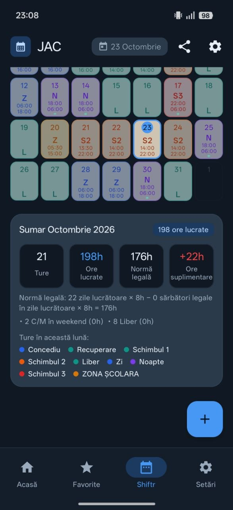

Utilizare zilnică
- Șabloane Z, N și L. Zi, noapte, liber — plus schimburile 1, 2 și 3, direct pe calendar.
- Norma, nu estimarea. Ore lucrate față de norma legală și orele suplimentare, calculate în aplicație.
- Export PDF. Programul de ture, scos din aplicație când trebuie predat.
- Pe telefon. Turele, orele și șabloanele rămân stocate local, pe dispozitiv.
Concediu
Recuperare
Schimbul 1
Schimbul 2
Liber
Zi
Noapte
Schimbul 3
Zonă școlară
